Edit Menu
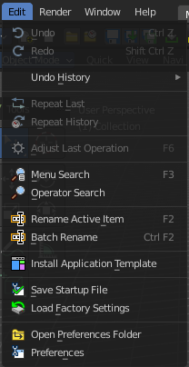
Undo
Reverts the last step.
Note. Bforartists uses two separated histories for the Object Mode and the Edit Mode. Means when you leave the Edit mode then you will loose the undo steps in the edit mode.
Redo
Rolls back your last Undo action.
Undo History
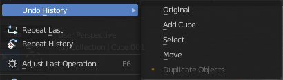
The Undo History is a list of the last operations. Here you can roll back to a specific step.
Note that this Undo History is a session history, and does not save to the Blend file.
Repeat Last
Repeat last repeats the last operation. For example, when you have moved an object by 5 in X, then it moves the object by 5 in X with every repeat last step.
Repeat History
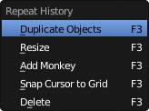
Repeat History calls a menu with the last actions where yon can choose an action to be repeated.
Adjust Last Operation
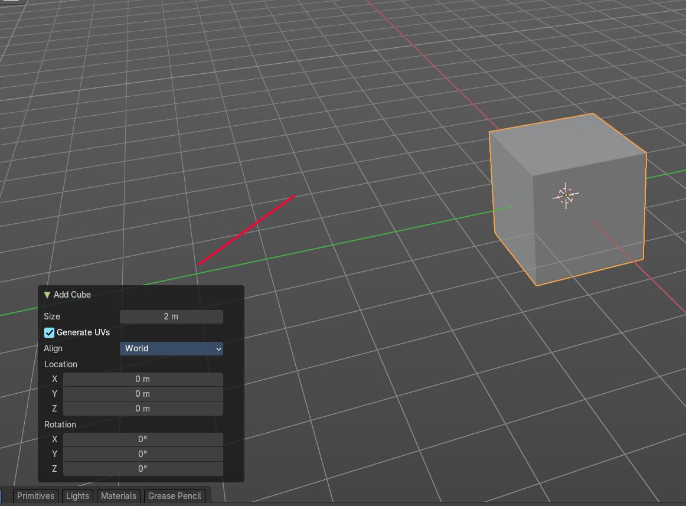
Some operations have settings, and can be further tweaked. It's the Blender ass forward concept for setting up an operation. In other software you set up an operation and perform it then with this settings. In Blender you first perform the operation, and tweak its settings afterwards. At least sometimes, this concept is not consistent. Bforartists is a fork of Blender. And so we have to live with this concept too.
For example, when you create a primitive, then you may want to adjust the size, or tick options like generate UV's at creation. This is done in the Last Operator panel. This Last Operator Panel is usually down left in the view.
Note that when you perform another operation, like moving the cube after creation, then the last operation content for creation is gone. It will now display the last operation content for the transform operation.
Menu search
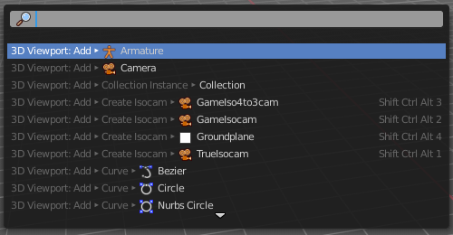
Lists the available menus.
Operator Search
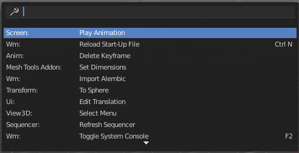
This menu item calls a search menu where you can search through all available operators, and perform them if needed. Think of it as one gigantic searchable drop down menu that contains everything available.
Even operators that have no menu entries are listed. Which is useful for scripting purposes, when you want to perform a script operation, but don't have a menu button (yet).
You can navigate with the mouse or with arrow up and down buttons. Performing an operator can be done by clicking at it or by hitting enter.
Note that this search just lists the old traditional operators from before Blender 2.80. Not the ones in the Tool Shelf, which is a completely independent tool system.
Rename active Item
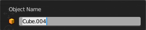
Allows you to rename the currently active item. A rename dialog will pop up where you can type in a new name for the current item. You can have more than one item selected. Just the active item gets renamed.
Batch Rename
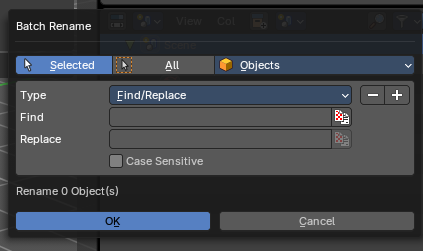
Allows you to rename more than one item or parts of the name at once. It will open a rename dialog with various settings.
Add / Remove Operator
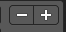
This allows you to add more than one operator and method. And here you can remove the operators too.
Data Source
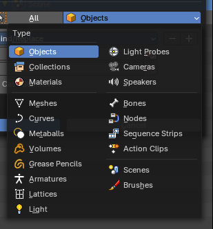
Rename just the selected objects, or all objects.
Data Type
Choose the data type that you want to process.
Note: Some of the data types require to be selected and processed from within the Outliner Editor, since elsewhere you can only select one at a time.
Type
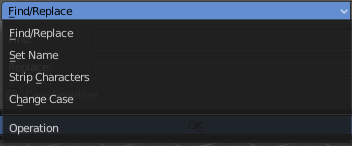
Choose the operation method. The content of the panel will change with the different types.
Find / Replace
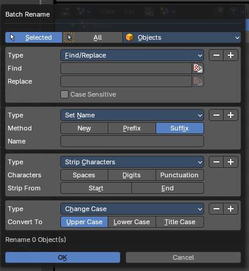
Find and replace names in the chosen objects.
| Entry | What it does |
|---|---|
| Find | The string that you want to modify. |
| Replace | The replacement. |
| Case Sensitive | Operate case sensitive, or handle small and big letters as equal. |
| Entry | What it does |
|---|---|
| Set Name | Set name of the chosen objects. · Method: Set the method. Sets the name new. Sets a number as a prefix Or Sets a number as a suffix. · Name: The name to set. |
| Strip Characters | Strip characters in the names of the chosen objects. · Characters: What type of characters to change. · Strip From: To strip from the start or to strip from the end. |
| Change Case | Convert to: Change the string to upper case, lower case or title case. |
OK
Accept the settings and apply the batch rename operation.
Install Application Templates
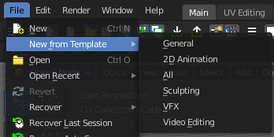
Load a new application template.
Application templates is a predefined set of workspaces with its own setup. It can contain its own layout, theming, its own startup file, its own add on set and scripts, a own key map and own lighting, and its own User Preferences.
Bforartists comes with six internal application templates already. Have a look at the "new" menu item in the file menu. Clicking at one of the menu items creates in fact a new scene by using one of the existing application templates.
How to create an application template
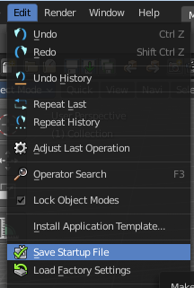
An application template is basically a zip file that contains a startup.blend, a userpref.blend, a splash.png and a __init__.py file that defines this all as an application template.
startup.blend and userpref.blend can be created in the Edit menu. So tweak everything to your needs, and save the startup file.
At Windows you will find them in the appdata directory in the Bforartists folder.
At Linux it's in /home/yourusername/.config/bforartists/2.80/config/
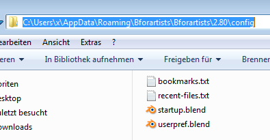
Copy those two files, startup.blend and userpref.blend, and throw them into a folder where you want to build the application template in. Rename this folder to AT_01, or to whatever name you want it to use.
Next create a png image as a splash screen for your template, and save it as splash.png into the AT_01 folder. The required size is 501x250. Everything else will throw an error, and you won't be able to see the new splash. You can alternatively also create a splashx2.png file in double size. This is for hi dpi monitors.
The required __init__.py file is a python file with a def register and a def unregister.
def register():
print(Registering application template : {0}.format(__name__)
def unregister():
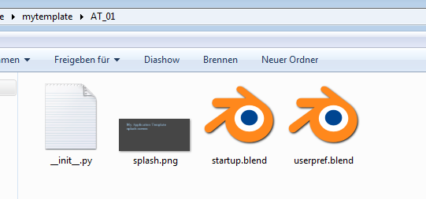
print(Unregistering application template : {0}.format(__name__)
So copy over this text, and save this file as __init__.py in the AT_01 folder
We should now have four files in the AT_01 folder. Zip the AT_01 folder. The template is finished for installing.
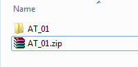
But as a last step, and before you install the template, remove the startup.blend and userpref.blend that we have created to build the application template from the config directory, to have a clean environment.
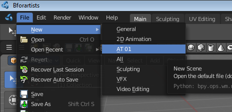
Once installed you will find the new application template in the New menu.
To remove an application template you need to remove its data in the config folder. There is no functionality to uninstall it.
Save Startup File
Saves a startup.blend with the current configuration.
A startup.blend stores layout informations. Editor layouts, default values, if a panel is open or closed, etc. .
Load Factory Settings
Resets Bforartists into a fresh installed state. All customer modifications, like activated addons, changes at the layout, etc. will be ignored.
Open Preferences Folder
Opens the folder in which the Bforartists settings and addons are stored.
Preferences
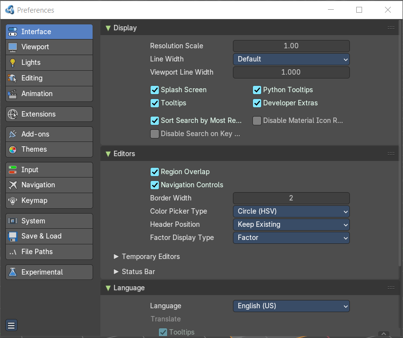
Opens the Preferences window. Adjust various settings.